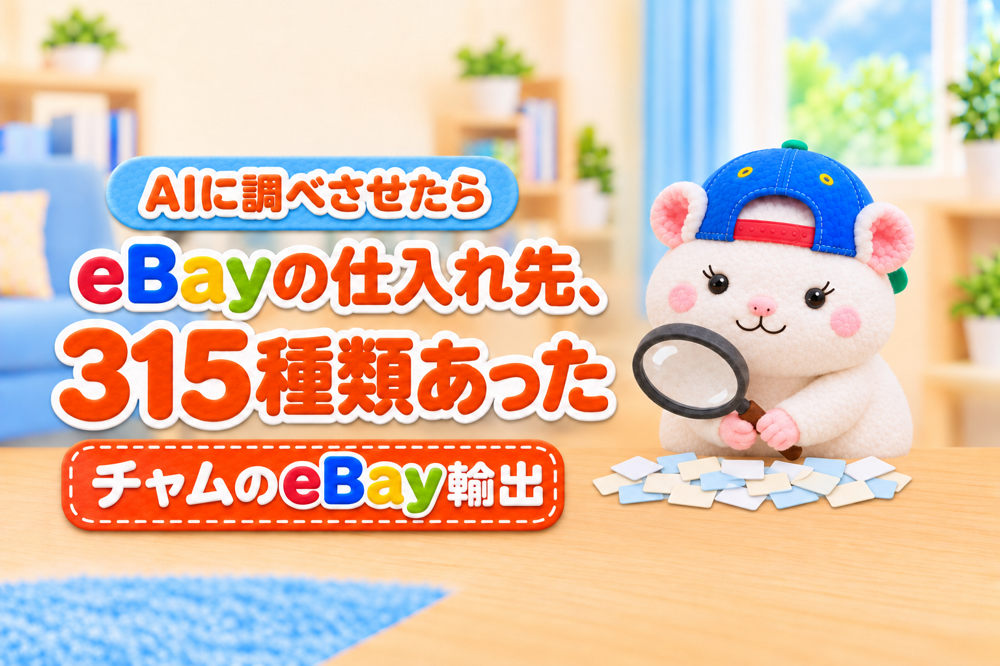

eBayの商品、どこから仕入れていますか？
AIに、ジャンルを問わず、日本でできる仕入れの方法をぜんぶ調べてもらいました。
出てきたのは、315種類の方法と、563件の具体的な仕入れ先です。
多くのセラーが使っているのは、そのうちのほんの一部です。
みんなが同じ場所で仕入れるから、同じ商品を、同じ値段で取り合うことになります。
仕入れ先は、ほかのセラーと差がつく、いちばん大きなポイントの1つです。
この記事では、調べてわかったことを5つにしぼって書きます。
- ハードルが高い仕入れ先ほど、ライバルが少ない
- 上流の仕入れ先は、ほとんど語られていない
- 業者の市場にも、海外のバイヤーがいる
- 海外の業者が入れない仕入れ先がある
- 規約で使えない仕入れ先がある
そのあとに、だれでも始めやすいおすすめの7つと、使う前に確かめる5つのルール、最後に差がつく3つの道を書きます。
読み終えたら、この記事をAIに読み込ませて、あなたのジャンルに合う仕入れ先を調べてもらうのがおすすめです。
この記事は、ジャンルを問わずに調べた仕入れ先の全体です。
AIに読ませて、あなたのジャンルと状況を伝えると、あなたのストアで使える仕入れ先にしぼって、順位まで付けてくれます。
そのまま使えるプロンプトを、記事の後半に載せています。
この記事を書いた人

この記事は、仕入れ先の見回りから出品までをAIに任せたストアで、初月から利益10万4,286円を出したチャムが書いています。
仕入れ先は「川」で考える
仕入れ先は、1本の川のように考えるとわかりやすくなります。
いちばん上流は、物が出てくる現場です。
家の片付け、お店の閉店、会社の在庫の処分、国や自治体の売り払い。
そこから業者の市場を通って、お店に出て、最後に新品のネットショップまで流れていきます。
- 上流ほど、仕入れ値は安く、ライバルは少ない
- 下流ほど、仕入れは手軽で、ライバルは多い
- 下流で仕入れると、同じ商品を、同じ値段で取り合う
フリマアプリやネットオークションは、川のかなり下のほうです。
だれでもすぐに使えるぶん、ほかのセラーと同じ商品になりやすくなります。
差をつけたいなら、いまの仕入れ先より、少しだけ上流に足を伸ばすのが近道です。
仕入れ先は、19の分類に分けられる
今回の調査では、仕入れの方法を19の分類にまとめました。
上流から下流の順に書きます。
| 位置 | 分類 | 例 |
|---|---|---|
| 上流 | 処分の現場 | 遺品整理・不用品回収・閉店・工場の閉鎖・倉庫の滞留在庫 |
| 上流 | 国・自治体の売り払い | 国税や自治体の公売・放置自転車の売り払い・大学の機械 |
| 上流 | 企業・団体の放出品 | 博覧会の什器・閉館した施設の備品・鉄道会社の部品販売 |
| 上流 | 事業ごと買う | ネット物販の事業を、在庫と仕入れ先ごと買う |
| 上流 | 自分で買い取る | 店頭・出張・宅配・法人の買取・委託販売 |
| 中流 | 業者だけの市場 | 古物市場・買取チェーンの会員オークション |
| 中流 | メーカー・卸 | 卸サイト・問屋街・産地の窯元や工房・見本市 |
| 中流 | 人づて | 同業者・コレクター・バイヤーからの「探してほしい」 |
| 中流 | 寄付・慈善のリユース | バザー・チャリティショップ |
| 中流 | レンタル・リース落ち | レンタル会社のアウトレット・リース会社の中古 |
| 中流 | 催事・イベント | 骨董市・古本まつり・中古カメラ市・産地の大廉売市 |
| 下流 | お店回り | リサイクルショップ・質屋・古道具屋 |
| 下流 | 一般向けのオークション会社 | 美術品やコインのオークション |
| 下流 | リユースチェーンの通販 | 中古ホビー・古本・ブランド品の通販 |
| 下流 | 個人どうしのネット売買 | フリマアプリ・ネットオークション・地元の掲示板 |
| 下流 | 発売・限定品 | 抽選販売・会場限定品 |
| 下流 | 新品のネットショップ | 大手モール・メーカーの公式アウトレット |
| 横断 | 海外から仕入れる | 海外の卸サイト・海外のフリマ |
| 横断 | 作る・直す・組む | 修理・部品取り・セット組み・バラ売り |
19の分類の中に、315種類の方法があります。
そして、その方法ごとに、具体的な仕入れ先が全部で563件ありました。
そのうち325件は、運営元の公式ページや法令の本文で、入る条件と規約まで確かめています。
発見1 ハードルが高い仕入れ先ほど、ライバルが少ない
仕入れ先は、入るための条件で5つの段階に分かれます。
| 段階 | 入るのに必要なもの | 入れる仕入れ先の例 | ライバル |
|---|---|---|---|
| ① | 会員登録だけ | 新品のネットショップ・ネットオークション・お店回り・公売 | いちばん多い |
| ② | 事業者としての登録 | 卸サイト・メーカーとの取引・業者向けの在庫売買 | 多い |
| ③ | 古物商の許可 | 業者オークション・古物市場・買取 | プロならみんな持っている |
| ④ | 許可+紹介・審査・資格・現地へ行く | 紹介制の市場・国の機関の売り払い・業者の先行入場 | 少ない |
| ⑤ | 業界の推薦・人との関係 | 美術品や古書の組合の市・処分の業者と組む | とても少ない |
古物商の許可は、プロのセラーなら持っていて当たり前です。
業者の市場に入るためのスタートラインで、ここでは差はつきません。
差がつくのは、その先の④と⑤です。
紹介者を探す、審査を待つ、資格を取る、平日に現地へ行く、人と関係をつくる。
どれも面倒です。
だから、ほとんどのセラーはここまで来ません。
例えば、こんなハードルがあります。
- 紹介者がいないと入れない道具市(紹介者が2社以上いる所も)
- 骨董市の業者の先行入場(開催の前日の12〜17時・2,000円)
- 国の機関の売り払いに出るための、全省庁統一資格
- 遺品整理や回収の業者と、品目をしぼって組む
全省庁統一資格は、個人事業者でも取れて、申請は無料です。
手間はかかりますが、1つ取ると、全国の国の機関の売り払いの入札に出られます。
高いハードルは、ライバルをふるい落とす壁です。
壁を1つ越えた人だけが使える仕入れ先が、そこにあります。
まだ古物商の許可を持っていなければ、まずはそこからです。
申請の手数料は19,000円で、営業所のある地域の警察署で申請します。
取るときに「行商する」にしておくと、入れる市場が増えます。
発見2 上流の仕入れ先は、ほとんど語られていない
AIに、YouTubeの仕入れの動画を69本選んでもらい、字幕を読ませました。
動画でよく出てくる仕入れの方法は、こうなりました。
| 動画でよく出てくる仕入れ方法 | 出てきた本数 |
|---|---|
| リユースチェーンのお店回り | 25本 |
| 古物市場 | 25本 |
| まとめ売り・ロットで買う | 25本 |
| ネットオークション | 23本 |
| フリマアプリ | 22本 |
| 遺品整理・回収のルート | 8本 |
| 公売・官公庁のオークション | 2本 |
みんなが見ている動画で語られる仕入れ先には、みんなが集まります。
反対に、上流の仕入れ先は、ほとんど語られていません。
公売に触れていたのは、69本のうち、たった2本でした。
処分の現場や、企業・団体の放出品の話は、ほぼ出てきません。
ここに、差をつける余地があります。
発見3 業者の市場にも、海外のバイヤーがいる
「業者だけの市場なら、安く仕入れられる」と思いがちです。
でも、そうとは限りません。
例えば、大手の買取チェーンは、自分たちが買い取った品を、会員の業者向けのオークションで売っています。
エコリングの「エコオク」は、古物商の許可と審査があれば、入会金3万円と年会費2万円(税抜)で参加できます。
毎週、ブランド品や道具がまとめて出てきます。
ただ、古物商の許可さえあれば入れるぶん、ライバルも多い市場です。
大きな業者オークションの中には、40か国以上のバイヤーが直接入札しているところがあります。
日本の業者の市場でも、海外の相場に近い値段がつくことがあります。
YouTubeでも、「副業の人と海外の業者が増えて、市場の利益が薄くなった」という声がいくつも出ていました。
英語の動画では、海外の業者が日本のお店や骨董市で、直接買い付けている様子もありました。
古物市場は、入れば安く買える場所ではありません。
「なにを、いくらまでなら買うか」を決めてから入る場所です。
発見4 海外の業者が入れない仕入れ先がある
その反対に、海外の業者が入れない仕入れ先もあります。
国税や自治体の公売です。
税金の滞納で差し押さえられた品や、国や自治体の持ち物が、入札やネットオークションで売られます。
公売には、「日本国内に住所か連絡先がない人は参加できない」という条件があります。
海外のバイヤーは、直接は入ってこられません。
ほかにも、ライバルが少ない仕入れ先は、こんなところです。
- 撤去した放置自転車の売り払い(古物商が条件の自治体がある)
- 大学や研究機関の機械の売り払い
- 国の機関の売り払い(全省庁統一資格が必要・発見1)
発見5 規約で使えない仕入れ先がある
仕入れ先を見つけても、すぐに使えるとは限りません。
規約で、転売目的の購入を禁止しているところがあるからです。
| 規約の書き方 | 例 |
|---|---|
| 転売・営利目的の購入を禁止 | ブックオフ・ディスクユニオン・らしんばんなど、多くのリユースチェーンの通販 |
| 転売目的の購入を禁止 | ポイントサイト(ハピタス・モッピー)・大手の家電量販店の通販・多くの限定品 |
| 海外への発送・転売を禁止 | 一部の卸サイト(TopSellerは海外発送ができない) |
| 事業者の利用を認めていない | 一部のフリマアプリ |
| 禁止の文が見当たらない | トレジャーファクトリー・駿河屋など |
反対に、eBayのセラーを歓迎している仕入れ先もあります。
例えば、卸サイトのスーパーデリバリーは、海外のeBayなどで売る人向けの案内ページを公式に出しています。
規約は、ときどき変わります。
使う前に、いまの規約を自分の目で確かめてください。
候補を出して、規約を上から順に確かめていく手順は、前の記事に書きました。

だれでも始めやすい、おすすめの仕入れ先7つ
315種類の方法から、だれでも始めやすく、ライバルが少ないものを7つ選びました。
| 順位 | 仕入れ先 | 入るのに必要なもの | 最初の一歩 |
|---|---|---|---|
| 1 | バイヤーの「探してほしい」 | なし | 「〇〇はある?」の質問を書きとめて、仕入れ先で探す |
| 2 | 買取チェーンの会員オークション | 古物商の許可 | 無料のお試しで、相場を見るだけ見てみる |
| 3 | 公売のネット入札 | 国内の住所 | 公売のサイトで、あなたのジャンルの品を毎日見る |
| 4 | 委託販売 | 古物商の許可 | 知り合いの品を1つ預かって、eBayで売ってみる |
| 5 | レンタル・リース会社の中古 | なし | 会社の中古の直販サイトで、eBayの相場と比べる |
| 6 | 遺品整理・回収の業者と組む | 古物商の許可 | 近くの業者に「この品目だけ買います」と伝える |
| 7 | セット組み・バラ売り | なし | いま売れている品で、組み合わせを考える |
1. バイヤーの「探してほしい」を受ける
いちばんのおすすめは、仕入れ先ではありません。
バイヤーの声です。
eBayをやっていると、「〇〇は持っていない?」「この型のものはある?」と聞かれることがあります。
欲しい人が先にいるので、仕入れたら売れ残りません。
聞かれたことを書きとめて、仕入れ先で探すときの言葉に足していきます。
取引は、かならずeBayの上でします(eBayの外での売り買いの約束は、ルール違反です)。
2. 買取チェーンの会員オークション
古物商の許可があれば、いちばん早く入れる業者の市場です。
ネットで入札できて、毎週たくさんの品が出てきます。
大手の買取チェーンの多くが、この形のオークションを持っています。
まずは、無料のお試し期間で相場を見るところから始められます。
3. 公売のネット入札
海外の業者が入れない仕入れ先です。
ネットで入札できるので、毎日の見回りもしやすくなります。
4. 委託販売
人の品を預かって、eBayで売り、売れたら手数料をもらう方法です。
仕入れのお金がかかりません。
預かって売るのも、古物の商売にあたります。
古物商の許可を取って、帳簿にもつけます。
5. レンタル・リース会社の中古
レンタルやリースが終わった品を、会社が直販していることがあります。
例えば、オリックス・レンテックは、中古の計測器やパソコンを「測定器ガレージ」「PCガレージ」で売っています。
会社の直販は、ネットオークションのように競りにならないのが強みです。
例えば、ぼくのストアで以前、ある中古の機器をネットオークションで仕入れようとしたときは、4回続けて競り負けました。
6. 遺品整理・回収の業者と組む
いちばん上流で、いちばん安く仕入れられる方法です。
業者は、仕分けたあとの品の売り先を探しています。
「この品目だけ買います」と、あなたのジャンルを伝えて組みます。
家から品を引き取る作業そのものは、業者に任せます(理由は、次の節の②です)。
7. セット組み・バラ売り
新しい仕入れ先がなくても、できる方法です。
まとめて売られているものをばらす、ばらばらのものを組んで1つの商品にする。
同じ仕入れでも、売り方で利益が変わります。
仕入れ先を広げる前に、確かめる5つのルール
上流に行くほど、法律やルールとの関わりが増えます。
知らずにやると、知らないうちに違反になることもあります。
| 場面 | ルール | どうするか |
|---|---|---|
| ① 骨董市やフリマで、個人の出店者から仕入れる | 古物商は、自分の営業所か相手の住所以外で、古物商でない人から品を受け取ってはいけない(古物営業法14条1項) | 古物商の出店者から買う/個人の品は相手の住所で受け取る/自分が出店して届け出る |
| ② 「無料で引き取ります」と集める | 家庭の不用品を引き取るには、市区町村の許可か委託が必要。古物商の許可では足りない | 引き取りは許可のある業者に任せ、売れる品だけを買う |
| ③ 出張買取をする | 特定商取引法の「訪問購入」。8日間のクーリング・オフがある。チラシを見て呼ばれただけでも外れない | 書面を渡して、8日間はクーリング・オフに応じられるようにしておく |
| ④ 仕入れ先から、バイヤーへ直接送る | eBayでは、小売店やマーケットプレイスで買って直送するのは禁止。卸と契約がある場合だけ可 | 一度、自分の手元に届けてから送る |
| ⑤ 輸出に条件がある品を仕入れる | お酒は、eBayでは承認されたワインだけ。象牙・べっ甲・珊瑚はワシントン条約。日本刀は登録証が国外で無効になる | 仕入れる前に、eBayのルールと輸出の条件を確かめる |
①は、とくに気をつけたいところです。
違反すると、1年以下の拘禁刑または50万円以下の罰金があります。
最後の判断は、管轄の警察署に確かめるのが確実です。
逆に、うれしい話もあります。
PSEマークのない古い電気製品も、輸出のために売るのであれば、電気用品安全法の販売の制限の対象外です。
AIに仕入れ先を調べさせるなら、この3つ
今回の調査は、ほぼすべてAIに任せました。
あなたが自分のジャンルで同じことをするなら、この3つを押さえるとうまくいきます。
① ジャンルを決めずに、ぜんぶ出させる
最初から「〇〇の仕入れ先」と決めると、いつもの答えしか返ってきません。
「だれから買うか」「どこで買うか」「どう買うか」の3つの切り口で、ぜんぶ出させます。
例えば、「処分する会社から・現場で・まとめて買う」と組み合わせると、倉庫の滞留在庫や工場の閉鎖の入札会が出てきます。
空いている組み合わせを探すと、ほかの人が知らない仕入れ先が見つかります。
② 公式のページで、3回裏を取らせる
AIが最初に出してくる答えには、まちがいがまざります。
今回も、1回目の答えの半分以上は、公式のページで確かめきれていませんでした。
3回くり返して、未確認は17件まで減りました。
YouTubeの話も、そのまま信じないことです。
動画で「実店舗が約100」と言われていた古着のチェーンは、公式では42店でした。
調べさせるときは、「まとめ記事ではなく、運営元の公式ページと法令の本文で確かめて、出典のURLを残して」と頼みます。
自動で読み込むのを断っているサイトは、無理に読ませないでください。
③ 自分の強みで、順位をつけさせる
仕入れ先に、だれにとっても正解の1位はありません。
あなたが持っている許可・使える時間・在庫を保管できる場所・得意なジャンルで、合う仕入れ先が変わります。
AIに、あなたのストアの状況を伝えたうえで、5つの基準で点をつけさせます。
- 利益への効き(安く・たくさん仕入れられるか)
- いまの強みとの相性
- 始めやすさ
- ライバルの少なさ
- 規約と法律の安全さ
ぼくのストアでは、この順位をもとに、新しい仕入れ先を決めています。
見つけた仕入れ先の新着を毎日見回って、出品までつなぐのもAIの仕事です。
ぼくは、eBay Japanに書面で確認した範囲(公式のAPIを使う・バイヤーの個人情報をAIに渡さない・AIでeBayの画面を開かない)でAIを使っています。
AIをどこまで使うかは、eBayや仕入れ先の規約を確かめたうえで、ご自身の責任でお願いします。
仕入元の決め方と、見つけた仕入れ先の在庫をAIに毎日見回らせるやり方は、教科書にまとめています(第3章・第18章)。
記事の最後に、リンクを書いておきます。
AIに渡すプロンプト(コピーして使えます)
この記事のURLと一緒に、下のプロンプトをAIに渡してください。
【 】の中は、わかる所だけ書けば大丈夫です。
この記事を読んで、私のeBayストアに合う仕入れ先を調べてください。
【私のストア】
・売っているジャンル:
・いまの仕入れ先:
・持っている許可(古物商など):
・仕入れに使える時間と、在庫を保管できる場所:
・住んでいる地域:
【やってほしいこと】
1. 記事の19の分類ごとに、私のジャンルで使える仕入れの方法と、具体的な仕入れ先を出してください。「だれから買うか」「どこで買うか」「どう買うか」の3つの切り口で、空いている組み合わせも探してください
2. それぞれ、運営元の公式ページか法令の本文で、入るための条件と規約(転売目的の購入の禁止・海外発送の禁止など)を確かめて、出典のURLを付けてください。まとめ記事は根拠にしないでください。確かめられないものは「未確認」と書いてください
3. 記事の5つの基準(利益への効き・いまの強みとの相性・始めやすさ・ライバルの少なさ・規約と法律の安全さ)で点を付けて、順位を付けてください
4. 上位3つについて、最初の一歩と、記事の「確かめる5つのルール」に当たる注意を書いてください
【守ること】
・自動で読み込むのを断っているサイトは、無理に読まない
・何も買わない・登録しない・問い合わせない
AIが返してくるのは、あなたのジャンルの仕入れ先の一覧と、順位です。
どこを使うかは、規約を自分の目で確かめたうえで、あなたが決めます。
AIは、1回目の答えにまちがいがまざります。
「未確認」の行が多ければ、「未確認の行を、公式ページでもう一度確かめて」と、くり返し頼んでください。
eBayで差がつく、3つの道
ここまでをまとめると、eBayでほかのセラーと差をつける道は、3つに分かれます。
| 道 | どこで勝つか | やること | 気をつけること |
|---|---|---|---|
| A. 上流・中流へ足を伸ばす | 仕入れ値 | ハードルを越える(紹介・資格・人と組む・現地へ行く) | 手間と、法律の確認が増える |
| B. 下流で規模を出す | 速さと数 | 組織化・自動化で、だれより早く・多く見つけて出品する | 規約で使えない仕入れ先が多い。値下げ合戦になりやすい |
| C. 売り方で価値を足す | 商品の中身 | 直す・セットに組む・ばらす・説明を足す・バイヤーの「探してほしい」から仕入れる | 目利きと手間が要る |
Aは、だれも行かない上流まで、直接買いに行く道です。
Bは、みんなと同じ下流で、だれよりも早く・たくさん仕入れる仕組みを持つ道です。
Cは、同じ仕入れ先の品でも、手を加えて別の商品にする道です。
Bの下流の勝負は、数が多い人・速い人がほぼ勝ちます。
値段とスピードの勝負になるので、規模が小さいうちは苦しくなりがちです。
だから、規模が小さいうちは、AかCを1つ混ぜるのがおすすめです。
仕入れを全部上流に変える必要はありません。
仕入れの一部だけでも、ほかのセラーとはちがう商品になります。
例えば、ぼくのストアは、Bの自動化が主力です。
仕入れ先の新着の見回りから出品までを、毎日AIに任せています。
まとめ
eBayの仕入れ先は、315種類の方法、563件の具体的な仕入れ先がありました。
調べてわかったことは、この5つです。
- ハードルが高い仕入れ先ほど、ライバルが少ない
- 上流の仕入れ先は、ほとんど語られていない
- 業者の市場にも、海外のバイヤーがいる
- 海外の業者が入れない仕入れ先がある
- 規約で使えない仕入れ先がある
仕入れ先は、ほかのセラーと差がつく、いちばん大きなポイントの1つです。
みんなと同じ場所で仕入れている限り、同じ商品を同じ値段で取り合うことになります。
差をつける道は、3つです。
上流・中流へ足を伸ばすか、下流で規模を出すか、売り方で価値を足すか。
まずは、いまの仕入れ先より1つだけ上流に足を伸ばすか、売り方を1つ変えてみてください。
あなたは、どの道で勝ちますか？
▼中の人🏠(レンタルスペース23部屋・売上1.5億)のレンスペ実録

▼ブログ(eBay×レンスペ、全記事まとめ)

▼この店のやり方は、ぜんぶ1冊にまとめてあります
リサーチ・出品・値付け・顧客対応まで、初月利益10万4,286円を出した実店舗の記録と手順を全部書いた教科書です。
読んだその日から、AI社員の作り方をそのまま真似できます。
『AI × eBay輸出の教科書 — 梱包以外、ぜんぶAI』


🎁 2026年10月22日に第3版になりました。顧客対応 完全自動化ツール・ストアドクター・AI自動化コーチなど付録6つは、これまでに買った人も含めて購入者全員に無料で受け取れます。
内容・最新価格は販売ページをご確認ください。